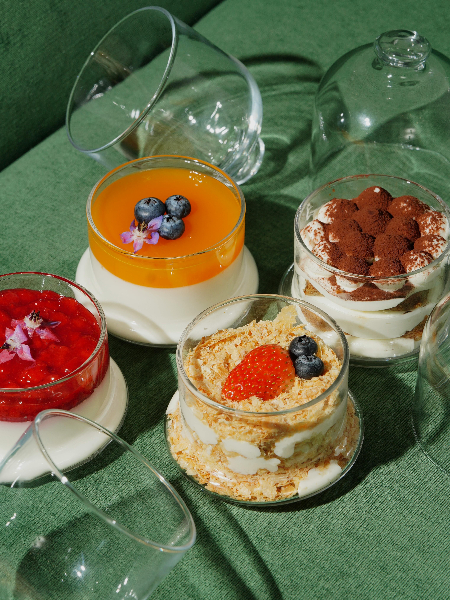
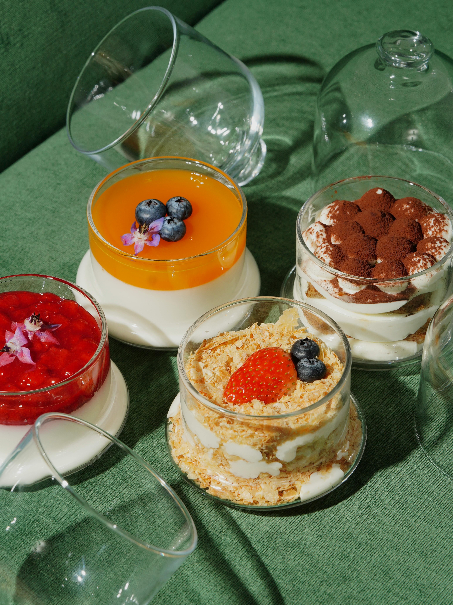

Classic Margherita Pizza
Servings: 2 pizzas | Prep Time: 20 minutes + rising | Cook Time: 10-12 minutes
Ingredients:
- 2 ½ cups (300g) all-purpose flour
- 1 teaspoon salt
- 1 teaspoon sugar
- 2 ¼ teaspoons (1 packet) instant yeast
- 1 cup (240ml) warm water
- 1 tablespoon olive oil
- 1 cup (240ml) pizza sauce
- 8 oz (225g) fresh mozzarella, sliced
- Fresh basil leaves
- Extra virgin olive oil, for drizzling
Instructions:
- In a large bowl, mix the flour, salt, sugar, and instant yeast.
- Add the warm water and olive oil. Stir until a dough forms.
- Knead on a floured surface for about 5-7 minutes until smooth and elastic.
- Place dough in a lightly oiled bowl, cover, and let rise in a warm place for 1 hour or until doubled in size.
- Preheat your oven to 500°F (260°C). If using a pizza stone, place it in the oven to preheat as well.
- Divide the dough into two portions. Roll out each to your desired thickness.
- Transfer the dough to a baking sheet or pizza peel. Spread with pizza sauce, top with mozzarella slices, and add fresh basil leaves.
- Bake for 10-12 minutes until the crust is golden and the cheese is bubbly.
- Drizzle with extra virgin olive oil before serving. Enjoy!
Tiramisu
Servings: 6 | Prep Time: 30 minutes + chilling
Ingredients:
- 6 large egg yolks
- 3/4 cup (150g) granulated sugar
- 2/3 cup (160ml) milk
- 1 1/4 cups (300ml) heavy cream
- 8 oz (225g) mascarpone cheese
- 24 ladyfinger cookies
- 1 cup (240ml) strong brewed coffee, cooled
- 2 tbsp coffee liqueur (optional)
- Unsweetened cocoa powder, for dusting
Instructions:
- In a medium saucepan, whisk together egg yolks and sugar until well blended. Whisk in milk and cook over medium heat, stirring constantly, until mixture boils. Boil gently for 1 minute, then remove from heat and allow to cool slightly. Cover and chill in the fridge for 1 hour.
- In a medium bowl, beat cream until stiff peaks form.
- Whisk mascarpone into the chilled yolk mixture until smooth.
- In a small bowl, combine coffee and coffee liqueur (if using). Quickly dip each ladyfinger into the coffee mixture (do not soak).
- Arrange half of the soaked ladyfingers in the bottom of a 9x9 inch dish. Spread half of the mascarpone mixture over the ladyfingers, then half of the whipped cream. Repeat layers.
- Cover and refrigerate at least 4 hours or overnight. Dust with cocoa powder before serving.


 
